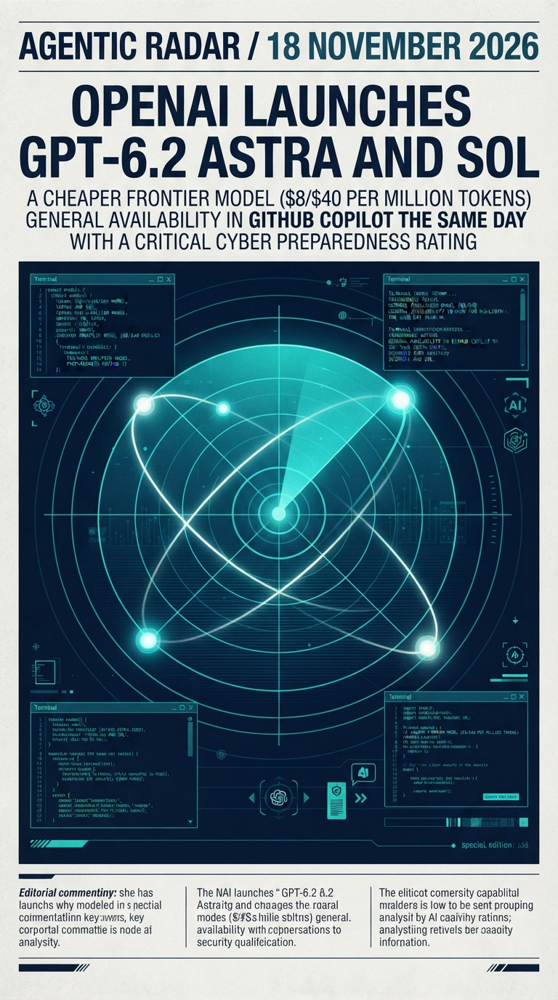

[982]
OpenAI launches GPT-6.2 Astra and Sol (Nov 17, openai.com): Astra cut to USD8/USD40 per 1M from USD10/USD50, Sol unchanged at USD2/USD10, with Critical cyber and High self-improvement preparedness ratings [announced-live]
Daily digest

Watch [987] — fetch: SEC/EDGAR Anthropic S-1/A final pricing filing — pricing is expected this evening Nov 18 with trading Nov 19 as ANT, but the raw item rests on secondary coverage citing the filing, not a primary filing link (gate 13)
Watch [983] — need primary URL: Codex CLI 0.170.0 realtime voice claim dated Nov 18 rests on a secondary tracker; fetch the openai/codex GitHub release before promoting it
Watch [990] — fetch: ai.meta.com / Meta Llama API announcement — the Nov 18 report gives no pricing and may recycle an earlier conference announcement; need a dated Meta primary
Rejected [989] — vendor account of NATO Daybreak cooperation already under way; no new dated deployment or primary OpenAI link in the raw item
Rejected [991] — [older] Kimi K3.1 Pro weights were covered at their Nov 2-4 release; a Nov 18 deployment guide is context, not a new release
Rejected [992] — confirmed non-release: GLM-5.5 still unannounced at the Nov 9 Z.ai check, as rejected yesterday; no Z.ai launch since
Rejected [993] — already covered Nov 10-17: MiniMax H3-Image weights and the Nov 17 discount expiry; no new model or pricing
Rejected [994] — [older] Nov 5: Mistral Studio managed agents public preview already covered; no GA or agent pricing since